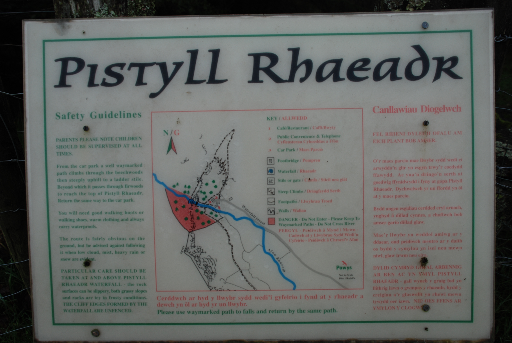

Walks
Routes around the falls
To the top of the waterfall
Next to the cafe go through the black gate leading to the bottom of the waterfall. Take the path leading off through the woods to the right (don't cross the iron bridge).
Continue through the woods until you reach the gate at the edge of the woods.
Alternative 1: Take the steep path and steps that lead up the mountain to the left. The path zigzags up the mountain until they come out on a farm track. When you reach this turn left.
Alternative 2: You can continue along the track to the right which is an easier route to the top. Follow the track, take the sharp left turn, up towards the falls.
Continue further along the track and around the corner. You will see a path leading down to a swing gate. This leads to the top of the falls.
Be careful at the edge of the cliff!